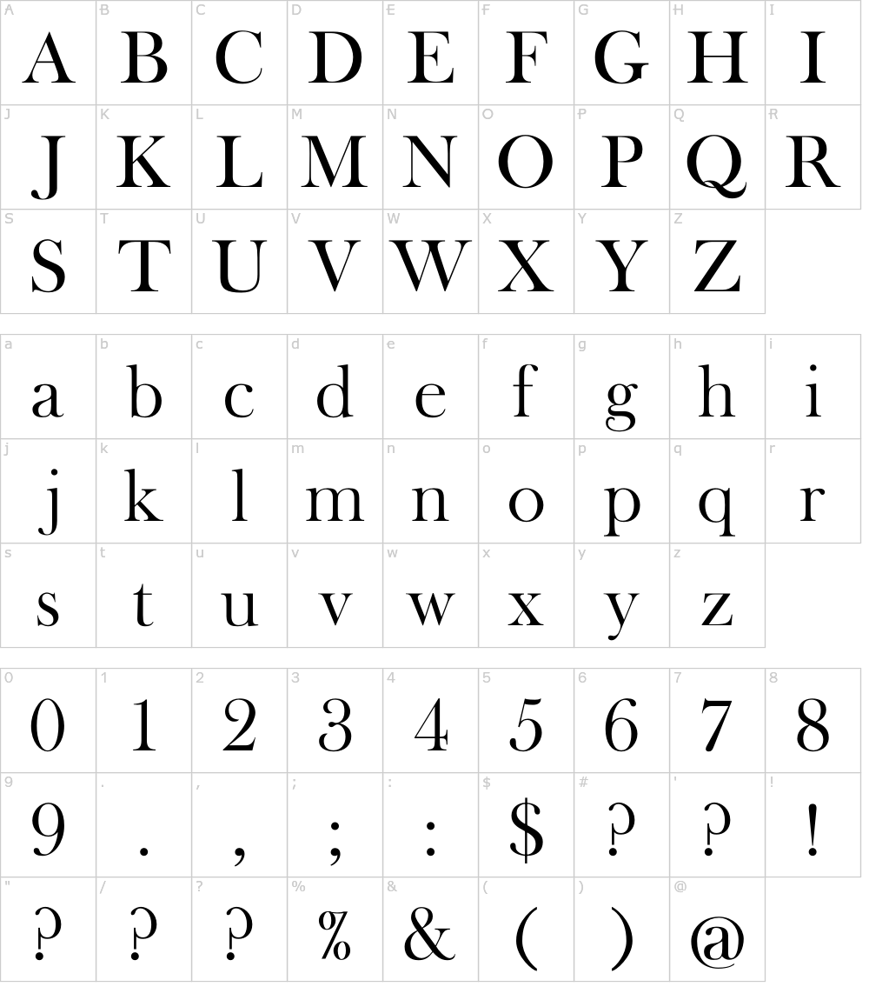
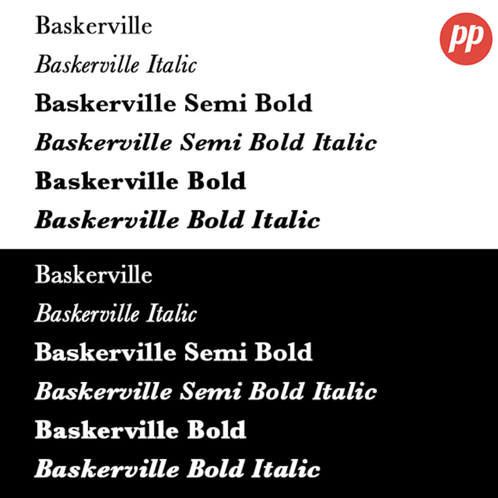

Il Baskerville è un carattere tipografico serif di transizione che si distingue per eleganza, equilibrio e precisione formale. Tra le sue caratteristiche più riconoscibili c’è l’alto contrasto tra tratti sottili e spessi, che crea una resa visiva raffinata senza compromettere la leggibilità. L’asse delle lettere è quasi verticale, segno del passaggio verso una tipografia più moderna. Le grazie sono sottili e affilate, e le proporzioni delle lettere risultano più regolari rispetto ai caratteri precedenti, contribuendo a un senso generale di chiarezza e ordine.
Alcuni dettagli delle lettere sono particolarmente significativi: la “g” minuscola è spesso a doppio occhiello, con una costruzione armoniosa e ben bilanciata, mentre la “Q” maiuscola presenta una coda elegante e fluida che si estende fuori dalla forma circolare, diventando un elemento distintivo.


Il sistema di pesi e stili di Baskerville è generalmente sobrio ma funzionale: nelle sue versioni più diffuse include Regular, Italic e Bold, con un uso dell’italico particolarmente espressivo, caratterizzato da forme più calligrafiche e dinamiche. Non è un carattere pensato per una grande varietà di pesi come i font contemporanei, ma piuttosto per un uso tipografico controllato e coerente.
Proprio per queste qualità, Baskerville viene utilizzato soprattutto in ambito editoriale, come libri, riviste e testi lunghi, dove garantisce una lettura fluida e confortevole.È inoltre molto presente nel branding elegante e nel design di lusso, grazie alla sua capacità di comunicare autorevolezza e raffinatezza.

John Baskerville
e la sua storicità

Curiosità e confronti tipografici